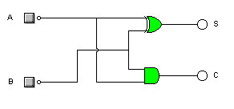

Sumadores
Un sumador es un circuito que realiza la suma de dos palabras binarias. Es distinta de la operación OR, con la que no nos debemos confundir. La operación suma de números binarios tiene la misma mecánica que la de números decimales.
Por lo que en la suma de números binarios con dos o más bits, puede ocurrir el mismo caso que podemos encontrar en la suma de números decimales con varias cifras: cuando al sumar los dos primeros dígitos se obtiene una cantidad mayor de 9, se da como resultado el dígito de menor peso y “me llevo" el anterior a la siguiente columna, para sumarlo allí.
En la suma binaria de los dígitos 1 + 1, el resultado es 0 y me llevo 1, que debo sumar en la columna siguiente y pudiéndose escribir 10, solamente cuando sea la última columna a sumar. A este bit más significativo de la operación de sumar, se le conoce en inglés como carry (acarreo), equivalente al “me llevo una” de la suma decimal.
Tipos de sumadores
Semisumador. Es un dispositivo capaz de sumar dos bits y dar como resultado la suma de ambos y el acarreo.

Sumador completo. Presenta tres entradas, dos correspondientes a los dos bits que se van a sumar y una tercera con el acarreo de la suma anterior. Y tiene dos salidas, el resultado de la suma y el acarreo producido.

Para sumar números de más de un bit, también se recurre al conexionado de sumadores binarios en paralelo, donde el acarreo de la suma de dos dígitos será una entrada a sumar en el paso siguiente. En este caso se precisan tantos semisumadores como bits tengamos que sumar. El montaje de la figura posterior tiene un funcionamiento idéntico al del CI 7483, aunque presenta incompatibilidades a nivel de pines.
Ver el siguiente video